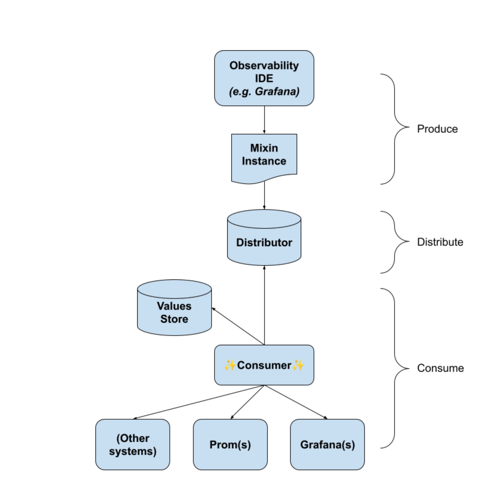
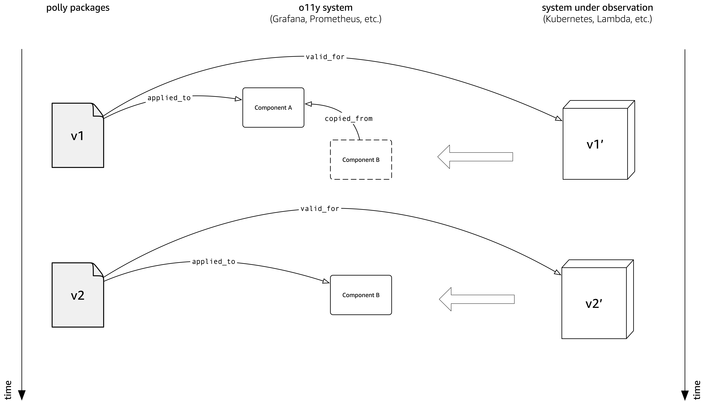
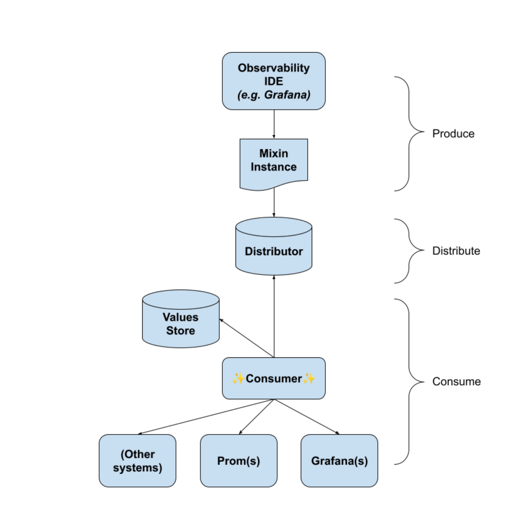
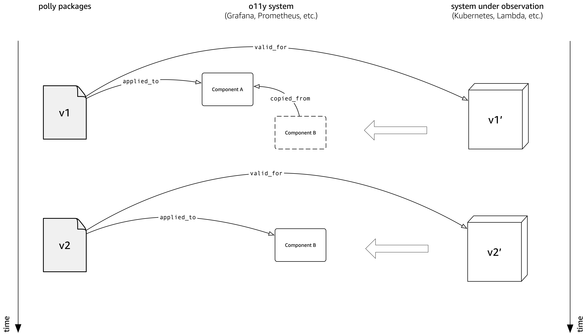

Lifecycle¶
This is where the contents of our GDocs goes:
https://docs.google.com/document/d/1GU0DGy-X6z4FVwbJYPsBKRdqApi2RppW0q2U6YUXOp8


This is where the contents of our GDocs goes:
https://docs.google.com/document/d/1GU0DGy-X6z4FVwbJYPsBKRdqApi2RppW0q2U6YUXOp8

